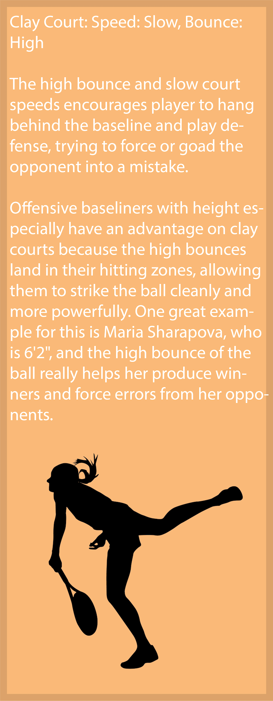
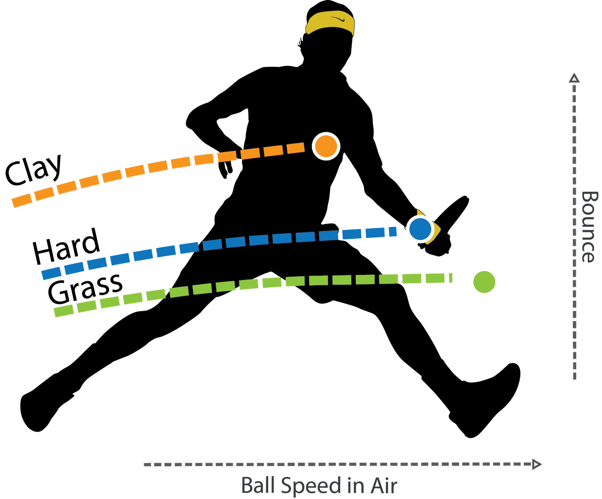
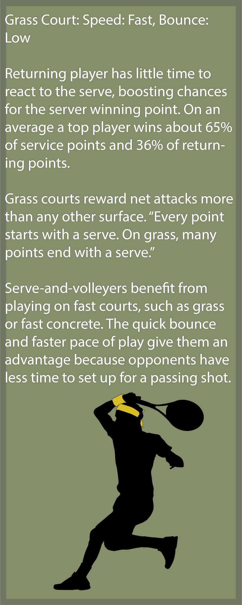
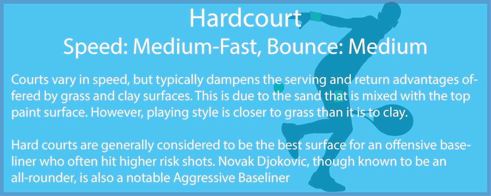
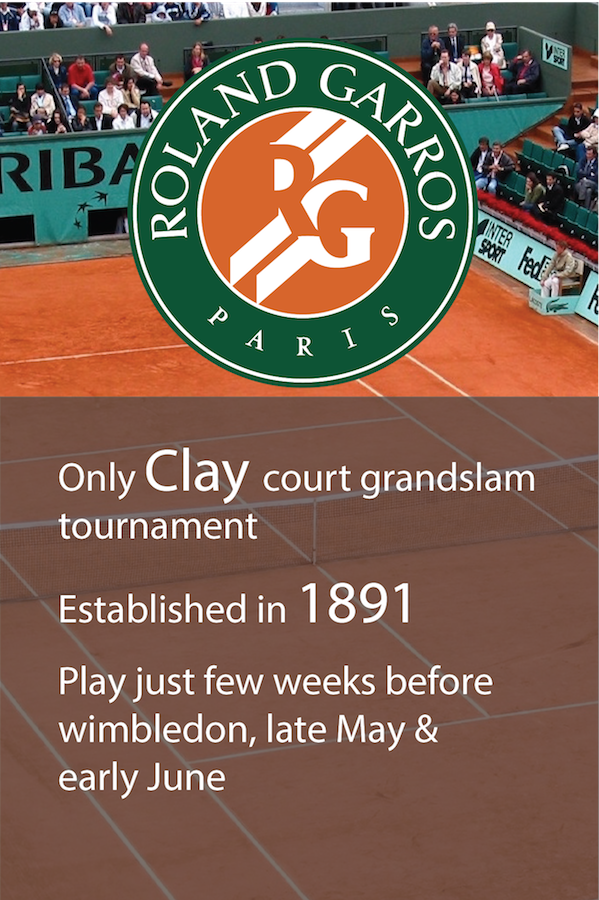
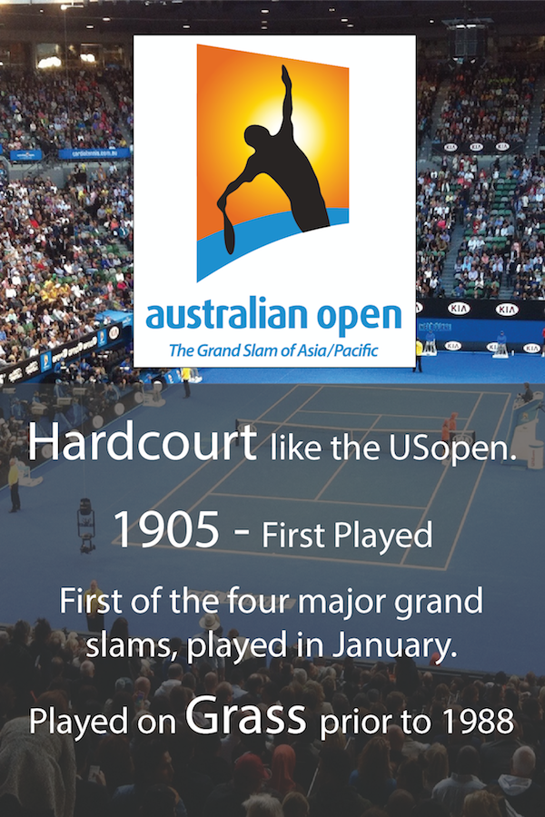
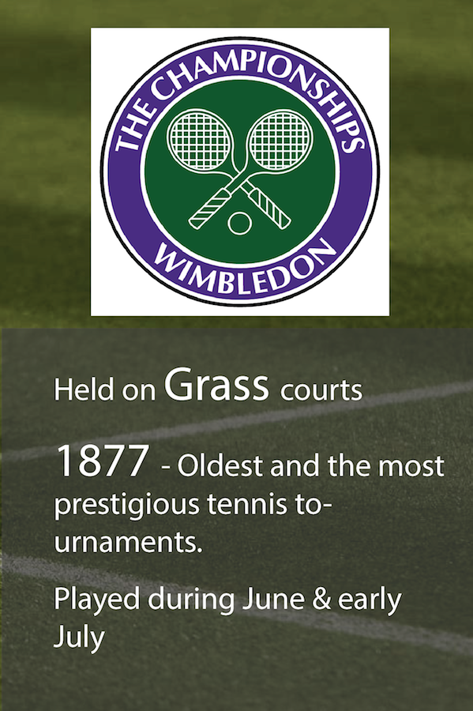
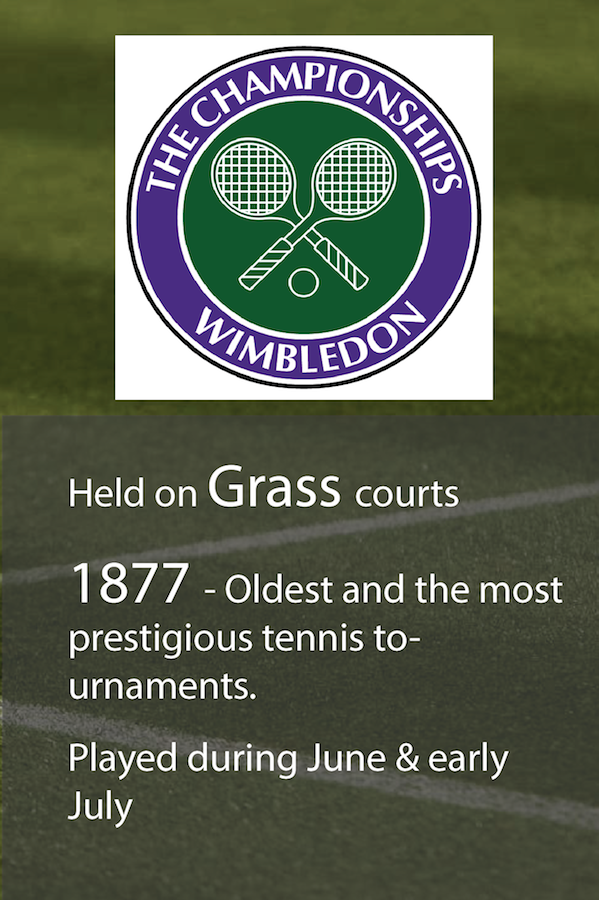
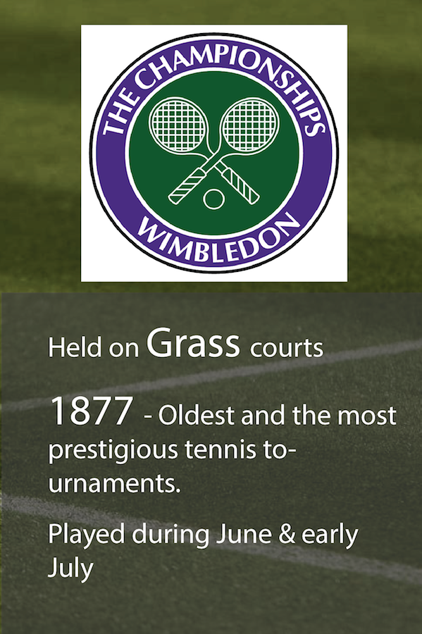

A Game of surfaces
Tennis is played on a variety of surfaces and each surface has its own characteristics which affect the playing style of the game. There are four main types of courts depending on the materials used for the court surface: clay courts, hard courts, grass courts and carpet courts.
A hard surface can differ based on the senthetic material used to make them, like Deco Turf (US Open) aand Rebound Ace (Australian Open). The surface affects game by affecting how ball speed and bounce.






 

